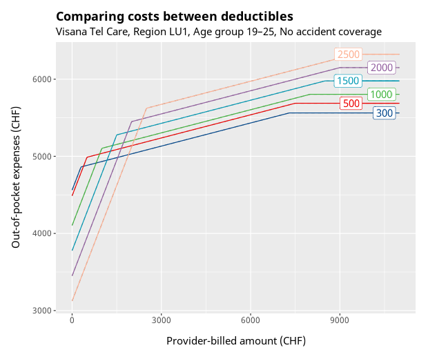
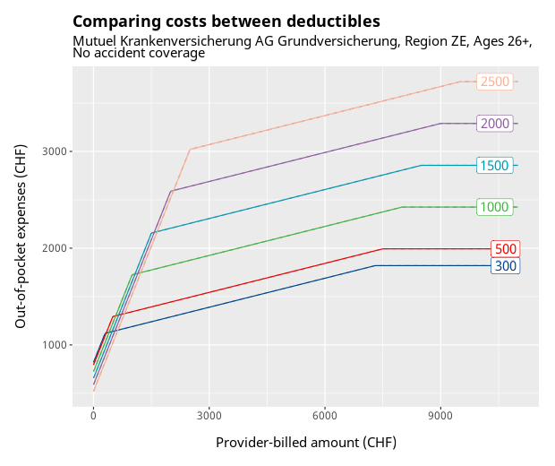
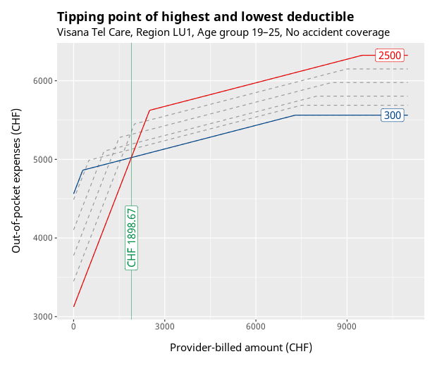
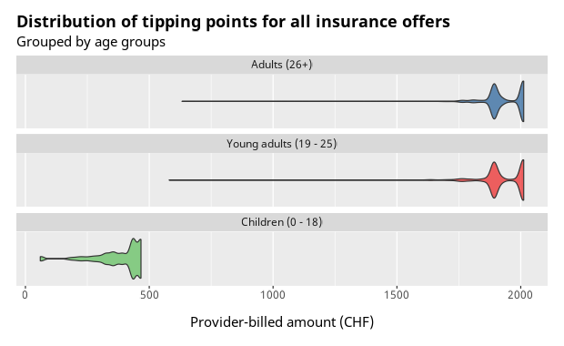
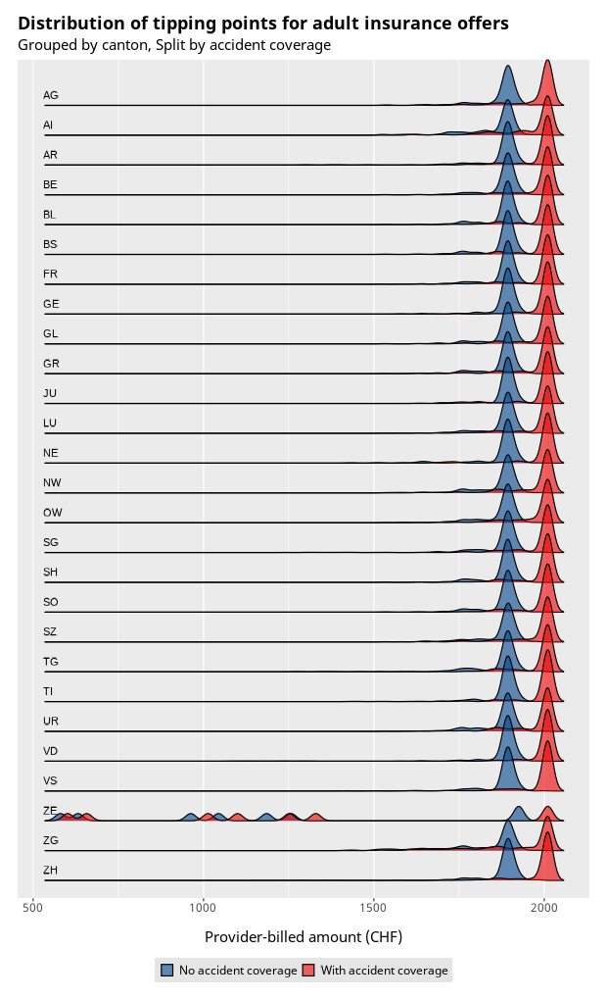
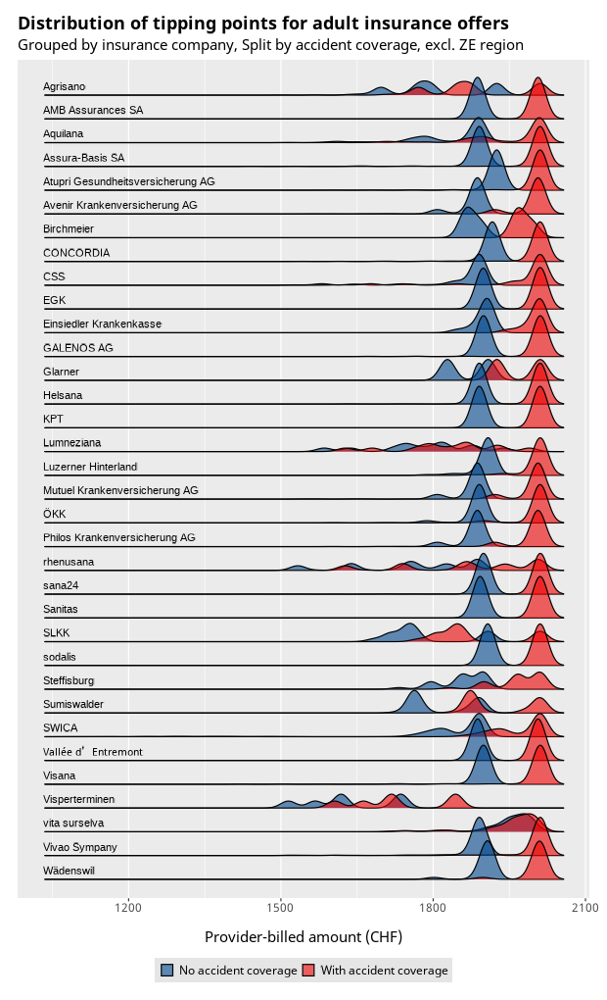

Why most health insurance deductibles make no sense
Digging into deductibles (Franchisen) of Swiss health insurances and comparing how different deductibles actually affect out-of-pocket costs.

It's that time of the year again, where all of Switzerland is plastered with advertisements for health insurance companies. People still have time to switch their insurance until the end of November, and with the ever-increasing premium costs, many people are re-evaluating which insurance they should choose next year.
Around this time last year, the SRF News portal published a Q&A article [1] where they answered a question about which deductible one should choose, and the answer was simple.
Bei Ausgaben für med. Leistungen von über 2000 Franken pro Jahr lohnt sich die Mindestfranchise (300 Franken), bei unter 2000 Franken die Höchstfranchise (2500 Franken).
This peaked my interest, because I wondered where this number of CHF 2000 came from and whether the decision really is that simple. And do the deductibles in-between really make no sense to choose?
Naturally, instead of just accepting this statement and moving on, I started to dig into the data myself to figure out more, and here is what I found.
Glossary
Defining terms with their German equivalent to best understand the text below.
| Term | Meaning |
|---|---|
| Premium Prämie |
Monthly cost of health insurance |
| Deductible Franchise |
Amount to be paid out-of-pocket before the insurance pays for anything |
| Co‑payment Selbstbehalt |
Your share of the costs after the insurance starts paying |
| Out-of-pocket expenses Persönliche Kosten |
What you are actually paying, including premiums, deductibles, and co-payments |
| Provider-billed amount Rechnungsbetrag |
Total cost invoiced by healthcare providers, i.e., doctors, pharmacies, etc. |
| Basic insurance Grundversicherung |
Mandatory health insurance, every insurance has to cover the same costs |
| Supplementary insurance Zusatzversicherung |
Optional insurance on top of the basic insurance that includes things not covered by basic insurance |
| Accident coverage Unfalleinschluss |
Whether accidents are covered by the insurance |
A quick overview
In Switzerland, basic health insurance is mandatory, and every insurance has to cover the same services. When you choose an insurance, you also choose a deductible. The deductibles available to adults are 300, 500, 1000, 1500, 2000, and 2500.
If the chosen deductible is 1000, that means the first CHF 1000 of health costs (covered by basic health insurance) will be paid out-of-pocket.
After the deductible was paid off, the insurance starts chiming in. Specifically, the insurance starts paying 90% of the provider-billed amount, and you will only have to co-pay 10%.
After all your co-payments reach a total of CHF 700, your health insurance will cover 100% of all costs.
Every insurance curve looks the same
Those clear rules make it so that the range of patient expenses is limited and very predictable. Once an insurance and a deductible have been chosen, we can calculate exactly how much has to be paid out-of-pocket, based on the expected provider-billed amount.
Let's plot one insurance offer as an example and compare the out-of-pocket costs for different deductibles.

The x-axis (left to right) shows the provider-billed amount, and the y-axis (bottom to top) shows the out-of-pocket expenses. Since you want to keep your expenses as low as possible, you want to make sure that you'll be on the curve at the bottom.
What is immediately becoming clear is that the highest deductible makes sense when you don't have a lot of healthcare costs, and the lowest deductible makes sense after you reach a certain tipping point of the provider-billed amount. The other deductibles are never the cheapest option.
In fact, the cost curves look exactly like that for all basic health insurances, just with slightly different starting points on the left.
For comparison, here is what a very different health insurance offer looks like.

This offer is special because it is only available to posted workers [4] . The lines start very packed together but grow further apart, yet the overall curve is the same as in the first example.
The tipping point
We have answered one of the questions from the beginning; it really doesn't make a lot of sense to choose any in-between deductible, because they are never the cheapest option.
So, let's focus on the lowest and highest deductibles, and specifically on the point where they intersect. I'll be calling this the tipping point.

Here we can see that the tipping point for this particular insurance offer is at CHF 1'898.67. If the expected healthcare costs are less than the tipping point, one should choose the highest deductible; otherwise, choose the lowest.
The bigger picture and more plots
We almost answered one of the other questions from the beginning: where does that CHF 2'000 in the SRF News Q&A [1] come from?
The tipping point for that particular insurance offer was determined to be at CHF 1'898.67. That is near 2'000, I suppose, but where is the tipping point for other insurance offers?
Luckily, the Federal Office of Public Health (FOPH) publishes all available basic health insurance offers as CSV, a whopping dataset of 217'472 rows for 36'334 individual offers. [3] We can get a better picture by digging through this data and calculating the tipping point for each offer.

This violin plot shows where most tipping points lie; from this we can already see the following:
- The tipping points for child insurance are much lower
- Tipping points for adults and young adults are largely the same, but they accumulate around two points
- The outliers in adult offers span over a wide range
Because I am focusing on adult health insurance, I'll continue by filtering out the data from child health insurance offers, but in case you are interested, here are the tipping points just for child health insurance.
{kind=link}

The tipping points are also the same across all regions, except for ZE. This is the special region for posted workers [4] who receive very different insurance offers, so we'll also filter them out from now on.
The plot also shows that the two accumulation points we saw earlier are related to accident coverage.
With this information, we have a definitive answer to the question about where the number 2'000 came from. If we want to be nitpicky we can clarify that this is only true for insurance offers with accident coverage, the tipping point for offers without accident coverage is more around 1'900 CHF.

The graph above shows that there is some variation between insurance companies, but it is still a negligible amount for a decent rule of thumb.
In summary
We can confirm that using 2'000 CHF as the tipping point to choose a deductible is accurate enough for a rule of thumb.
Based on the information presented, my personal recommendation on how to choose the deductible would be as follows:
- Make a guess on how much you'll be billed next year by healthcare providers (doctors, pharmacies, etc.); your insurance likely sent you a tax statement that shows the billed costs of last year; use it for reference
- If you need accident coverage, choose the highest deductible (2500) only if you expect the provider-billed amount to be below CHF 2'000; otherwise, choose the lowest (300)
- If you do not need accident coverage, choose the highest deductible (2500) only if you expect the provider-billed amount to be below CHF 1'900; otherwise, choose the lowest (300)
- Before committing to an insurance offer, calculate the tipping point with the formula below to double check whether that rule of thumb applies to the specific insurance offer you just chose
- Lastly, if you expect your healthcare costs to be around or slightly below the tipping point, be mindful that choosing the highest deductible will incentivize you not to get treatment you may need. I have personally experienced friends who picked the highest deductible because they were short on money and then didn't seek treatment during a mental health crisis because they were still in the deductible range.
Further information and ideas
Calculating the tipping point
The following formula was used to calculate the tipping point of a particular health insurance offer:
# pseudo code with example values
dedLow = 300 # lowest deductible
premLow = 380.20 # premium for lowest deductible
premHigh = 260.30 # premium for highest deductible
# calculating the tipping point
tp = (premHigh * 12 - premLow * 12) / -0.9 + dedLow
An idea for a better calculator
For people who can approximately foresee the healthcare costs they are facing next year, it would be useful to create a calculator that takes this estimate into account.
The premium calculator [5] of the FOPH requires you to choose a deductible before showing you the cheapest options. But as we have seen, not all offers have the same tipping point.
I think it would be useful if there was a calculator where you can enter an estimate of next year's provider-billed amount, let it consider the tipping points, and then return the best options based on that.
This certainly wouldn't be that difficult to implement, and I was even thinking about doing that. But if I were to attempt that, this post would never be published before the end of November... maybe next year!
References
- [1]
- Julian Gerber, «Wann lohnt sich die höchste Franchise von 2500 Franken?», SRF News, 2024, https://www.srf.ch/sendungen/kassensturz-espresso/services/chat-krankenkassenpraemien-wann-lohnt-sich-die-hoechste-franchise-von-2500-franken
- [2]
- Magdalena Soll, Familienrabatte bei der Krankenkasse: Information und Übersicht, comparis.ch, 2025, https://www.comparis.ch/krankenkassen/familie/familienrabatte
- Bundesamt für Gesundheit, Sektion Prämien und Solvenzaufsicht, Krankenversicherungsprämien, 2025, https://opendata.swiss/de/dataset/health-insurance-premiums
- [4]
- Bundesamt für Sozialversicherungen, Entsandte, https://www.bsv.admin.ch/bsv/en/home/informations-for/entsandte.html
- [5]
- Bundesamt für Gesundheit, Prämienrechner 2026, https://www.priminfo.admin.ch/de/praemien